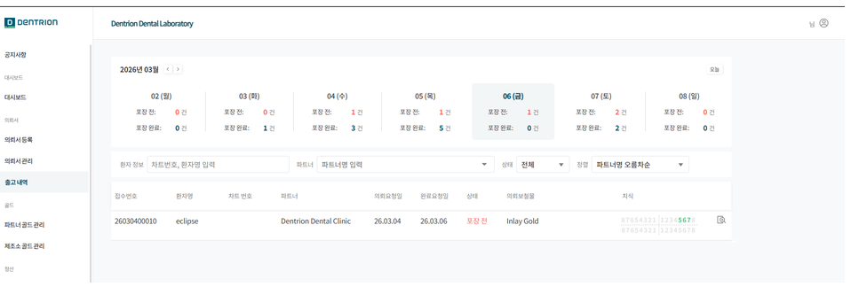
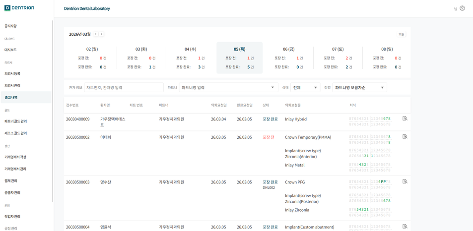
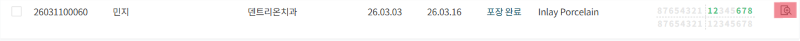
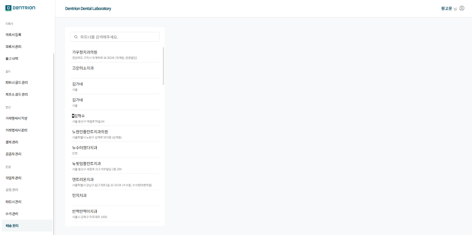
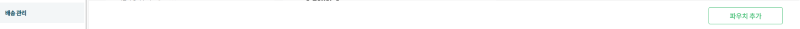
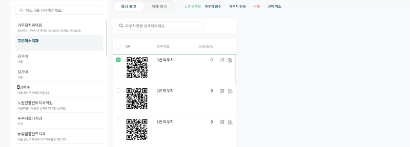

1.출고 내역
확인하고자 하는 날짜의 포장 상태와 완료 여부를 확인하는 창입니다.
이 화면에서 해당 날짜에 해당되는 의뢰서 보철물의 상태를 나타냅니다.

1-1.기능 설명
1-1-1.출고 내역
월요일을 기준으로 금일이 포함된 주간의 포장 전과 포장 완료의 갯수를 확인 가능합니다.
기본값은 금일로 설정이 되어있으며 회색 배경과 텍스트로 구분이 가능합니다.
우측 상단 년,월 옆 < > 버튼으로 주간 변경이 가능합니다.
확인하고싶은 일을 클릭 시 출고할 내역들을 표시합니다.

1-1-2.검색 기능
차트 번호와 환자명을 입력 시 그에 해당하는 정보의 모든 출고 내역을 보여줍니다.
파트너명 입력시 입력한 해당 파트너에 모든 출고 내역을 보여줍니다.
상태 선택 시 선택한 상태의 의뢰서만을 보여줍니다.
정렬에서 자신이 원하는 정렬 방식을 선택 시 출고 내역을 해당 정렬 방식으로 보여줍니다.
모든 검색 기능을 한가지 이상 설정 시 초기화 버튼을 통하여 초기화 가능합니다.
1-1-3.상세 보기
상세 보기 버튼 클릭 시 해당 의뢰서를 확인 및 수정 가능합니다.
상세 보기는 치식 옆 확대 버튼입니다.

2.배송 관리
보철물 제작 후 포장 완료한 파우치를 관리할 수 있는 페이지입니다.
파트너 클릭 시 해당하는 파트너에 파우치를 확인 할 수 있습니다.

2-1.파우치
파트너 클릭 시 즉시 출고와 택배 출고 별 해당 파우치가 뜹니다.
QR코드, 파우치명, 의뢰서(건) 별로 확인이 가능하며 해당 파우치 이름 변경과 파우치에 들어가있는 의뢰서 확인가능합니다.
하단 우측에 파우치 추가 버튼이 있습니다.
2-1-1.파우치 추가

하단 파우치 추가 버튼 클릭 시 파우치의 구분 선택과 이름 입력 칸이 가능한 팝업창이 뜹니다.
2-1-2.즉시 출고

즉시 출고 파우치 리스트에서 파우치 체크 박스 선택 시, 우측 상단에 버튼이 생성됩니다.
파우치 회수와 인쇄, 삭제, 선택 취소가 가능합니다.
삭제 시 파우치에 의뢰서가 없는 경우에만 가능합니다.
회수 시 파우치 내 모든 의뢰서가 포장 완료 상태만 유지되고, 파우치 안 의뢰서가 사라집니다.
2-1-3.택배 출고
택배 출고는 파우치 회수가 불가합니다.
파우치 상세보기 클릭 시 상단에 출고일,택배사,송장번호 입력칸이 나오고 하단에는 파우치에 해당하는 의뢰서 목록이 뜹니다.
배송 진행 현황 버튼 클릭시, 현재 배송 현황이 출력됩니다.
하단에 엑셀 다운로드와 URL 복사 버튼이 있습니다.
택배 출고 파우치 예시
파우치의 현재 배송 상태와 엑셀 다운로드, 태블릿 확인이 가능합니다.